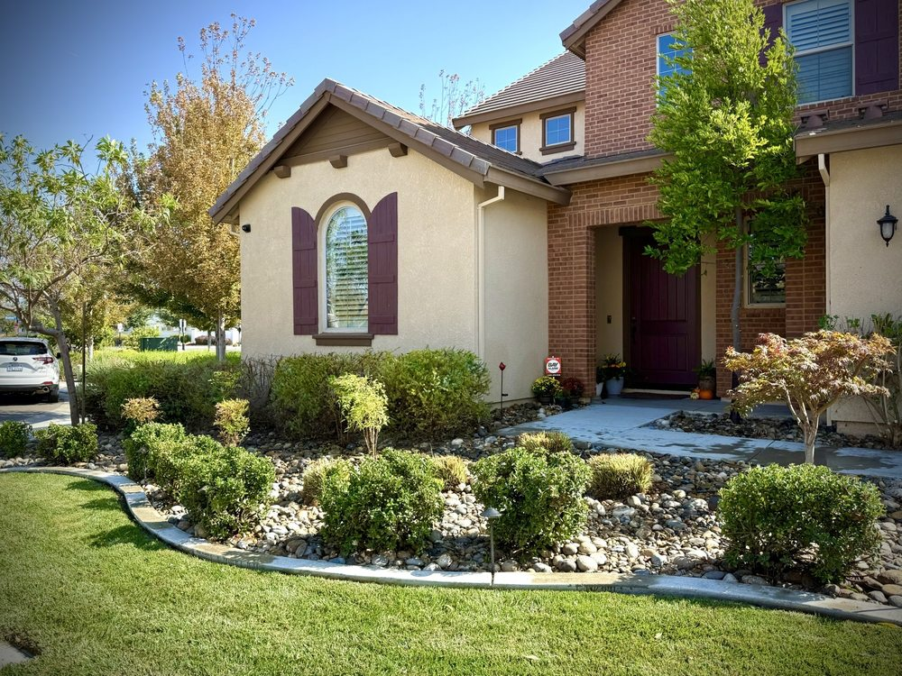
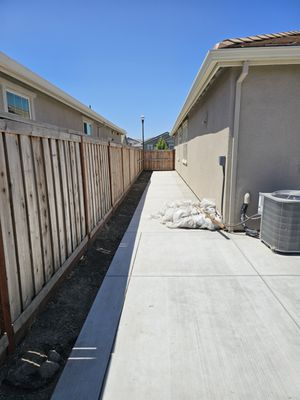
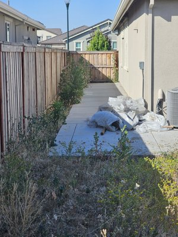
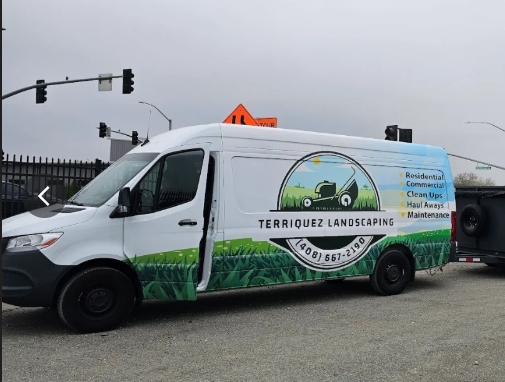

Your yard.
Its best life.
From “we’ll get to it” to the best part of coming home.
Landscaping with an eye for every last detail.
01 / THE TRANSFORMATIONS
Same yard.
Whole new feeling.
The overgrowth goes. The possibility stays.
Real transformations from the Terriquez gallery.
Drag the handle. Let the work do the talking.


Overgrown to open again.
Side-yard cleanup · Weed removal
02 / FIND YOUR SATISFYING
There’s just
something about
a clean cut.
The first pass. The crisp edge.
That fresh-cut feeling.
Take a moment. Enjoy the little things.
GO ON. MAKE A PASS.
A little order
in your day.
Move across the lawn to cut your own stripes.
03 / A YARD WELL CARED FOR
Big reset.
Or a little upkeep.
One outdoor space. Plenty of possibilities.
Tell us what you have in mind.
01Lawn care & maintenance
+
Fresh mowing, clean edges, aeration and dethatching. Give your lawn the attention that makes all the difference.
Talk lawn care ↗02Yard cleanups & haul-aways
+
Clear the weeds, tame the overgrowth and get the debris out of the way. Make room to enjoy your yard again.
Plan a cleanup ↗03Trees & shrubs
+
Trimming, planting, tree removal and stump removal. Bring shape and breathing room back to your landscape.
Discuss your trees ↗04Sod, mulch & rock
+
Fresh sod, defined beds and carefully laid mulch or rock. Small details that change the whole view.
Explore a refresh ↗05Irrigation
+
Irrigation installation, repairs and maintenance. Talk with the team about what your yard needs.
Talk irrigation ↗
LOCAL ROOTS.HANDS-ON CARE.
04 / YOUR LOCAL YARD PEOPLE
Good work.
Good neighbors.
Based in Lathrop, Terriquez Landscaping helps outdoor spaces feel cared for—from regular lawn maintenance to the cleanup you’ve been putting off.
Roberto and the team bring a hands-on approach to the work. Start with a conversation about your yard, your ideas and what comes next.
Get to know us on Yelp ↗FROM THE NEIGHBORHOOD
“They do great work
and communicate well!”
YOUR NEXT CHAPTER STARTS OUTSIDE
Let’s make
“after” happen.
A fresh start for your yard is one conversation away.
Call (408) 667-2190 ↗Or request pricing on Yelp ↗